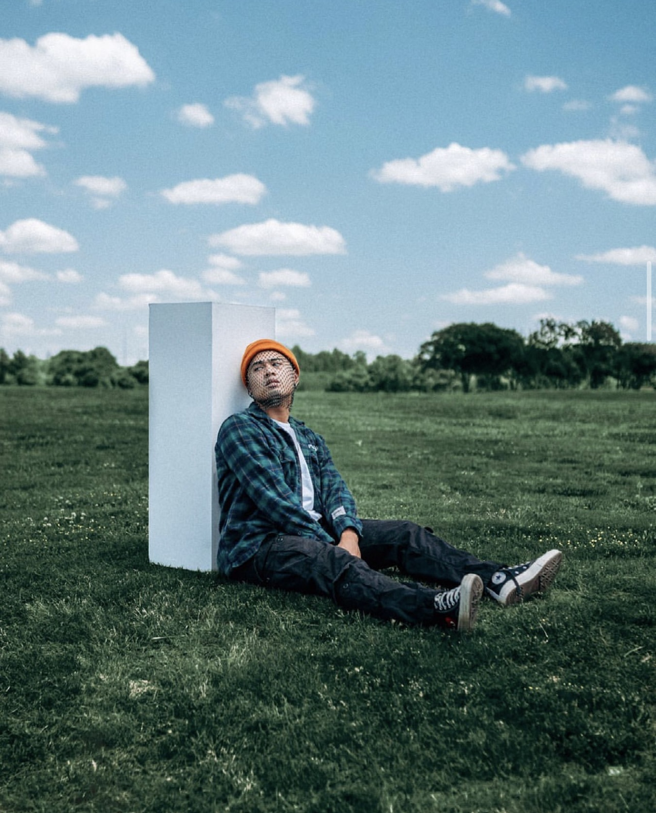
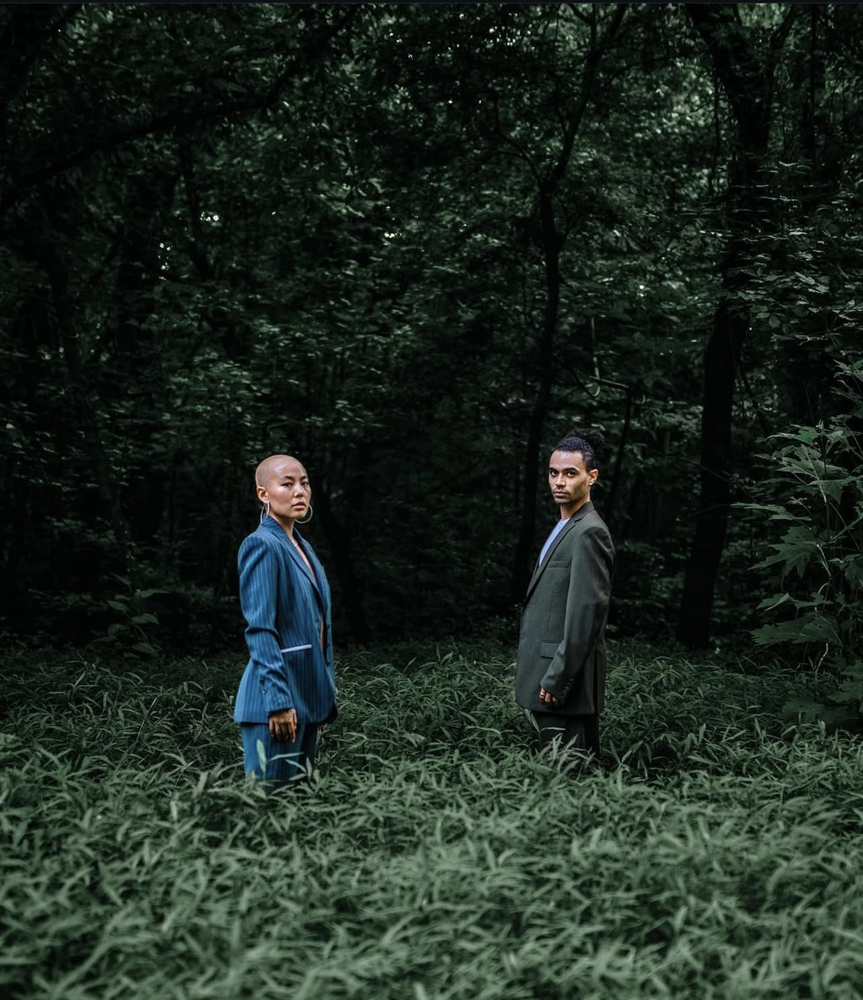
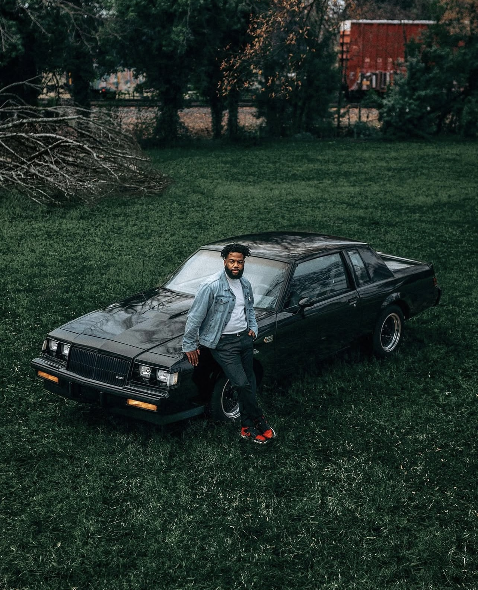
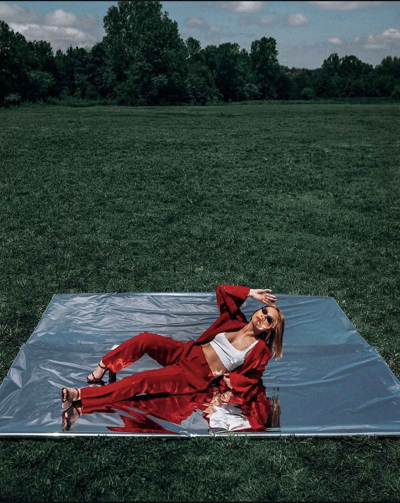
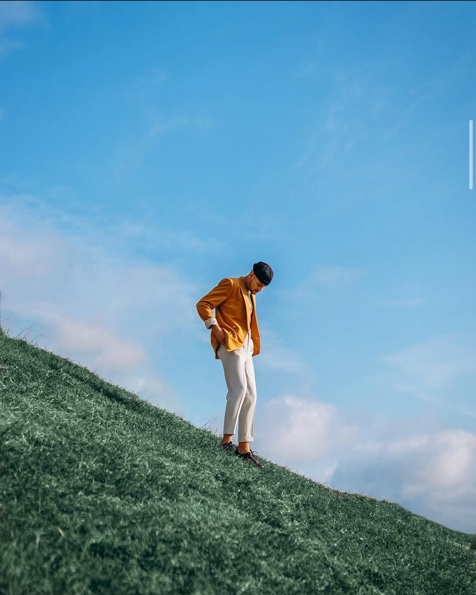
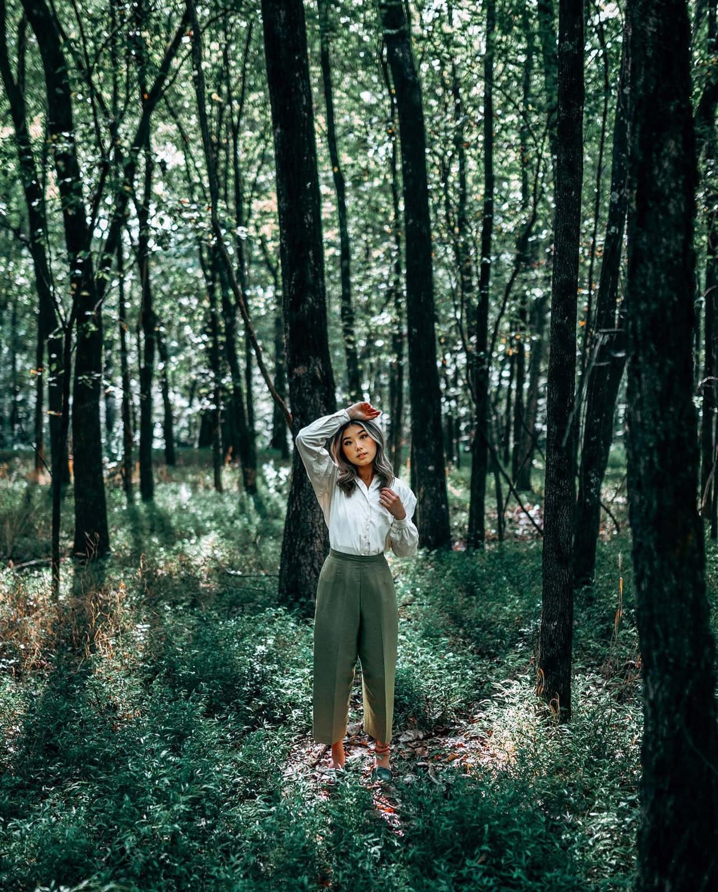

Stephan Salazar Photography
Life through a different lens
Capturing life one frame at a time — welcome to the online portfolio of Stephan, a passionate photographer specializing in portraits, landscapes, and event photography. This site is your gateway to explore visual stories that celebrate beauty, emotion, and authentic moments.
Whether you're here to browse the latest shoots, book a session, or get inspired, we're glad you stopped by. Dive in and discover the world through his lens.





